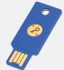
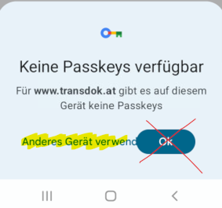

transdok mobil
Die App für unterwegs
Ein Einblick in die wesentlichen Funktionen der App fürs Handy.
Einfach testen
Wer einen Zugang zu transdok am Computer hat, kann auch die App sehr einfach testen.
Echtbetrieb
 Für den Login ist ein NFC-fähiger Token notwendig. Dieser blaue Token kann bei connexia angefordert werden. Bei Verwendung am USB-Anschluss eines Computers muss nach dem Klicken von login das goldene runde Schlüsselsymbol berührt werden, um den Login-Vorgang fort zu führen. Beim Handy funktioniert der Token kontaktlos.
Für die erste Verwendung des Token starten Sie den ‘Browser’ und rufen Sie die Seite www.transdok.at auf, um von dort aus die transdok App zu installieren bzw. zu starten.
Auf der Startseite der App zuerst auf die große blaue Login-Schaltfläche tippen, ggf. Mandant wählen, Benutzername und Kennwort eingeben und Login tippen. Danach den Token hinten in der Mitte oder eher im oberen Bereich direkt auf das Handy halten, bis eine Reaktion (Ton/Vibration) zu erkennen ist. Die passende Position ist je nach Handy-Modell etwas unterschiedlich und kann durch langsame Bewegung herausgefunden werden. Jedenfalls muss der Token so lange ans Handy gehalten werden, bis die Klientenliste ersichtlich ist. Bei langsameren Handys spürt man zwei Mal kleinere Reaktionen und der Vorgang kann einige Sekunden dauern. Nimmt man den Token zu schnell wieder weg, kommt eine Fehlermeldung und man muss so lange abbrechen klicken, bis man den Vorgang ganz von vorne (große blaue Login-Schaltfläche tippen) beginnen kann.
Für die wiederholte Verwendung ist es praktisch, wenn transdok als App installiert wird. Dies ist im Video ‘Als App Installieren’ beschrieben. Wenn es Probleme beim Login mit Token gibt, sollten Sie die App deinstallieren und den hier beschriebenen Vorgang mit einem anderen Browser (z.B. ‘Chrome’) versuchen.
Fehlerbehebungen
Beim Login mit Token am Handy kann seit einem google-Update folgende Meldung erscheinen:

Mit Tippen auf die Schrift Anderes Gerät verwenden (NICHT auf Ok), sollte man weiter zur Auswahl NFC-Sicherheitsschlüssel kommen. Falls man stattdessen zum Lesen eines QR-Codes aufgefordert wird, kann der Login mit Token aktuell leider nicht verwendet werden. Dann die Möglichkeit Login mit Code verwenden, die im Video Einfach testen vorgeführt wird.
Bei Fehlern muss die App ganz geschlossen werden. Es kann auch ausreichen, abbrechen zu tippen, bis man wieder die große blaue Login-Schaltfläche sieht.
Nach dem Login tippen müsste das Hinhalten des Token an das Handy ausreichen. Wenn immer wieder nach der NFC-Aktivierung gefragt wird, sollte diese am Handy dauerhauft in den Einstellungen gemacht werden. Dazu die Einstellungen öffnen, nach NFC suchen und aktivieren.
Wenn der Token weiterhin nicht erkannt wird, ist der nächste Schritt ein sog. Soft Reset. Ein Soft Reset ist ähnlich einem Neustart und löscht keine Daten. Bei den meisten Handys wird er mit dem für einige Sekunden langen gleichzeitigen Halten der Ein/Aus-Taste und der Leiser-Taste ausgelöst.
Hilfsmittel für das Suchen von Fehlern ist die Seite webauthn.io. Hier können vom Handy aus Testlogins durchgeführt werden. Oder es kann das App NFC Tools installiert werden, um zu testen, ob das Handy den NFC Token erkennen kann.
Hinweise zu IPhones
- Beim IPhone muss der Token vorne oben hin gehalten werden, nicht hinten.
- Es kann der Standard-Browser anstelle des Chrome-Browsers verwendet werden.
- Bilder können nicht von der Galerie einglesen, sondern nur direkt fotografiert werden.
Als App installieren
Zur wiederholten Verwendung von transdok mobil ist es praktisch, die Startseite als App zu installieren. Verwenden Sie dazu den Chrome Browser